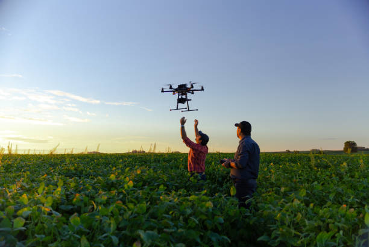
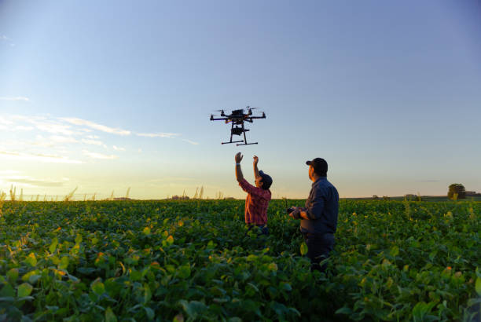

Sobre o Concurso
O Concurso Agrinho é uma das maiores ações de educação e responsabilidade social do Brasil, voltado especialmente para alunos e professores da rede pública de ensino. Ele busca promover, por meio da educação, a conscientização sobre temas essenciais para a formação cidadã, como sustentabilidade, ética, meio ambiente, cidadania, inovação e a valorização da cultura do campo e da cidade.
Na edição de 2025, com o tema “Festejando a Conexão do Campo e da Cidade”, o concurso convida os participantes a refletirem sobre os laços históricos, econômicos e culturais que unem esses dois universos aparentemente distintos. A proposta é promover uma compreensão mais profunda sobre como o campo e a cidade dependem um do outro, e como, juntos, podem criar soluções criativas para os desafios da atualidade, como segurança alimentar, preservação ambiental, qualidade de vida e inclusão social.
O Agrinho vai além do concurso: ele é uma ferramenta pedagógica, que estimula o protagonismo estudantil, a pesquisa, a criatividade e o pensamento crítico. Professores atuam como mediadores do conhecimento, incentivando os alunos a explorarem o mundo à sua volta, investigando sua realidade local e propondo alternativas viáveis para uma sociedade mais justa e sustentável.
Estudantes são convidados a expressar suas ideias por meio de redações, desenhos, vídeos, poesias e projetos escolares, sempre com foco em valores que promovem o respeito à diversidade, à cultura e ao meio ambiente. Cada produção é uma oportunidade de dar voz às novas gerações, que enxergam no campo e na cidade possibilidades de troca, crescimento e aprendizado mútuo.
A conexão entre o rural e o urbano é essencial para o futuro. O campo fornece alimentos, saberes tradicionais, práticas sustentáveis e modos de vida que devem ser preservados. A cidade, por sua vez, traz avanços tecnológicos, acesso à informação e serviços que também podem beneficiar a população rural. Quando esses dois mundos dialogam, nasce um espaço de inovação e solidariedade.
Por isso, o Concurso Agrinho 2025 é um convite: vamos refletir, imaginar, escrever, desenhar e construir juntos um futuro onde campo e cidade caminham lado a lado, com respeito, valorização mútua e esperança.
- üåø A importância da agricultura sustentável nas cidades
- üå± O papel das tecnologias rurais na vida urbana
- üèôÔ∏è Como as cidades podem se beneficiar com a integra√ß√£o com o campo
- üöú O impacto das tradi√ß√µes rurais na cultura urbana
- ü§ù Parcerias e a√ß√µes que unem comunidades urbanas e rurais
Regulamento
O regulamento do Concurso Agrinho 2025 apresenta as orientações completas para participação: categorias por faixa etária, critérios de avaliação, tipos de trabalhos aceitos, prazos de envio e premiações. Ler atentamente o regulamento garante que sua participação esteja de acordo com as normas e aumenta suas chances de destaque.
üìÑ Baixar RegulamentoFormulário de Inscri√ß√£o
Galeria de Fotos
 
